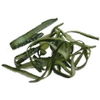

Le compostage est un processus de décomposition. En première phase, la température peut atteindre jusqu'à 70°, et une bonne aération est nécessaire (pour les bactéries 'aérobies'). En seconde phase, champignons, lombrics et autres petits animaux sont à l'œuvre Il faut 6 mois-1 an pour un bon compost.
Le compostage est un processus de décomposition. En première phase, la température peut atteindre jusqu'à 70°, et une bonne aération est nécessaire (pour les bactéries 'aérobies'). En seconde phase, champignons, lombrics et autres petits animaux sont à l'œuvre Il faut 6 mois-1 an pour un bon compost.
Le compost peut contenir :
- les restes de la cuisine : céréales, épluchures, fruits, légumes, marc de café, sachets de thé,
- les restes du jardin : fleurs fanées, feuilles mortes, foin, gazon séché, mauvaises herbes, paille, plantes de jardin, sciure de bois en petite quantité,
- les restes de la maison : cendres (en petite quantité), cheveux, essuie-tout, filtres à café, mouchoirs en papier, papier, poussière.
De préférence, éviter :
- le pain en grosse quantité,
- les coquilles d'œufs (non biodégradable),
- les écorces d'agrumes non traités.
Ne surtout pas mettre
: - branches en grosse quantité,
- coquilles de noix et noisettes,
- écorces d'agrumes traités,
- feuilles de noyer ou rhubarbe,
- fromage (attire rats, souris...),
- graisses,
- herbes traitées,
- laits et produits laitiers,
- litières animaux,
- plantes malades,
- reste de taille de jardinage en grosse quantité,
- viandes (odeur forte, attire rats, chiens...).
Quelques conseils :
- équilibrer entre déchets secs et humides,
- aérer : ne pas tasser, mais retourner de temps en temps,
- mouiller un peu.
Source principale : article Compost sur Ékopédia